Fujisato
Fujisato · Akita
Fujisato
Highlighted on the Akita map.
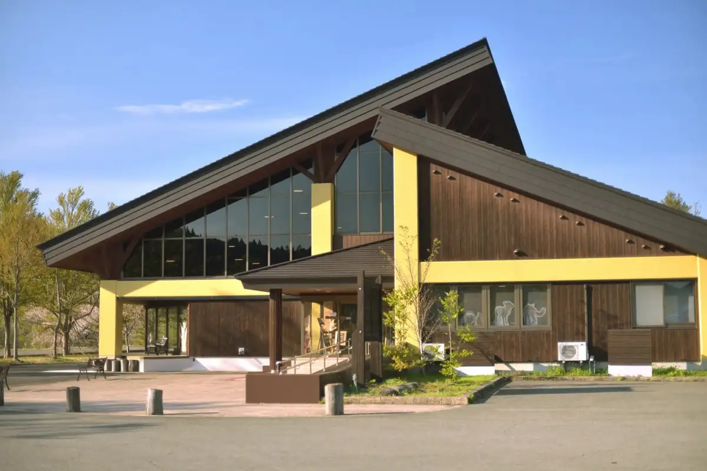
Dining
ホテルゆとりあ藤里
ホテルゆとりあ藤里
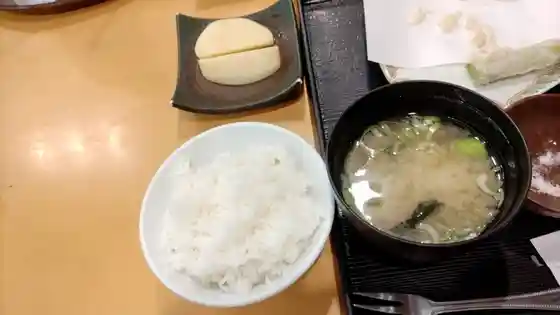
白神山地 森のえき
白神山地 森のえき
センター食堂部 田代
センター食堂部 田代
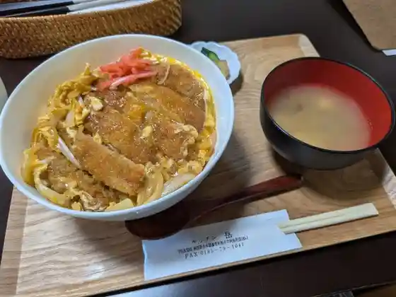
キッチン岳
キッチン岳
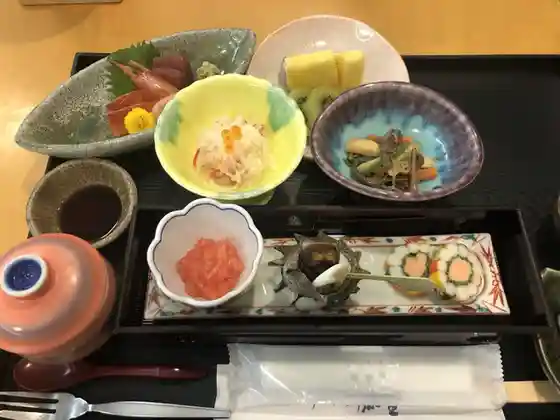
レストラン コッキー
レストラン コッキー
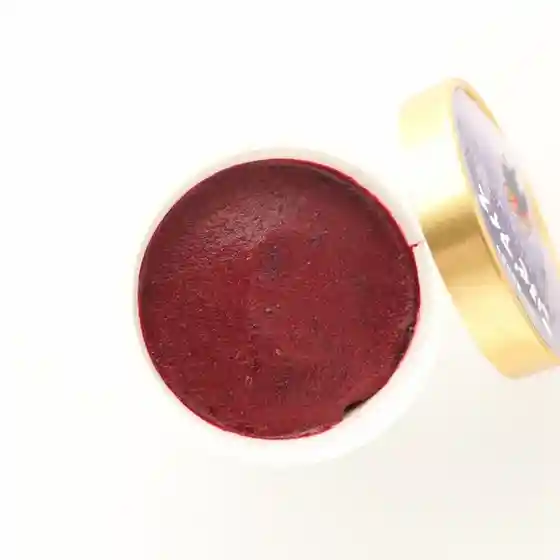
菓子工房エスポワール
菓子工房エスポワール
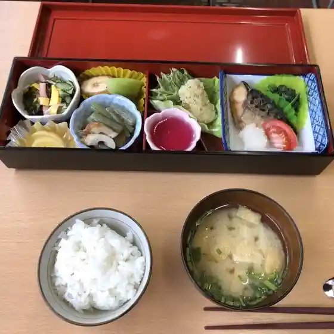
農村環境改善センター
農村環境改善センター
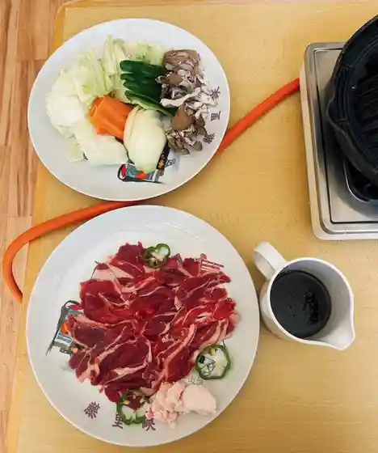
農家レストラン サフォーク白神
農家レストラン サフォーク白神
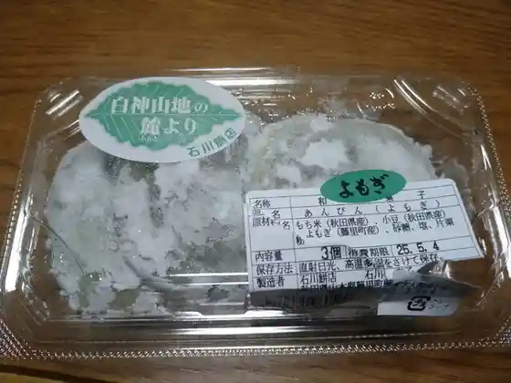
石川餅店
石川餅店
レストハウス白神
レストハウス白神
こみっと
こみっと
ふじみや
ふじみや
浅利商店
浅利商店
だまっこ屋
だまっこ屋
花道
花道
ちゃこ
ちゃこ
ごん太
ごん太
ふる里
ふる里
農家レストラン
農家レストラン
和みの湯
和みの湯
お食事処憩
お食事処憩
Ishioka Yozo
Ishioka Yozo
Chako
Chako
Obako Sushi
Obako Sushi
Gonta
Gonta
Suffolk Shirakami
Suffolk Shirakami
Kappo Fujimi Ya
Kappo Fujimi Ya
Meals Shoikoi
Meals Shoikoi
Furusato
Furusato
Morinoeki Shokudo
Morinoeki Shokudo
Hanamichi
Hanamichi
Stay
白神山地 ホテルゆとりあ藤里
白神山地 ホテルゆとりあ藤里
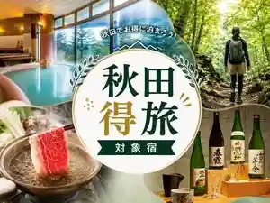
Sights
Shirakami Sanchi Sekai Isan Center (Fujisato Kan)
Ga Ro Falls (Garo no Taki)
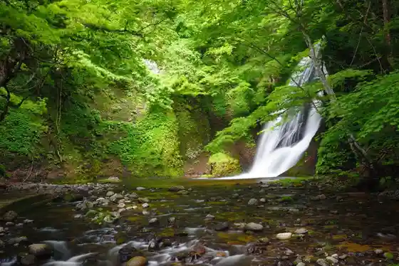
Choshi Falls (Choshi no Taki)
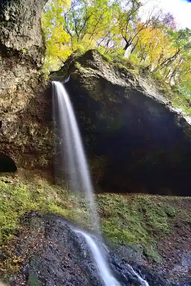
Fujisato Komagagaku (Fujisatokomagatake) / Tanae Dai Marsh (Tanashiroshitsugen)
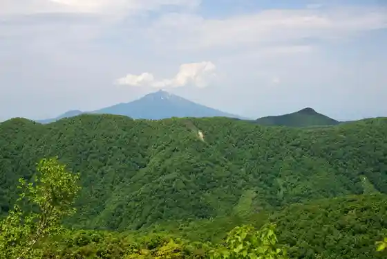
Shirakami Sanchi Mori no Eki
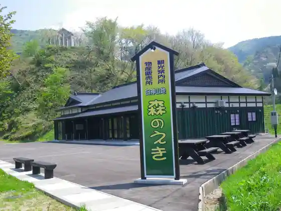